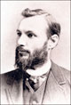

The Oesper Collections in the History of Chemistry, University of Cincinnati
Notes from the Oesper Collections
2012 issues
These occasional notes highlight items and topics of interest in the Oesper Collections in the History of Chemistry.
| No. 17: Famous Scientists in Plaster and Bronze, November ⁄ December 2012. | |
| The 17th issue of Notes from the Oesper Collections describes the various busts and bas reliefs of famous scientists found in our portrait and print collections. | |
| No. 16: The Parr Calorimeter, September ⁄ October 2012. | |
| The use of the calorimeter to measure heats of chemical reactions and phase changes dates back to the 18th century. Perhaps the most common examples of 20th-century American calorimeters are those manufactured by the Parr Instrument Company of Moline, Illinois, of which the Oesper Collections owns numerous examples. | |
| No. 15: The Art of the Book Plate, July ⁄ August 2012. | |
| The used and rare books that find their way into the Oesper Collections, either as donations or purchases, often contain the book plates of their previous owners and this issue of Notes from The Oesper Collections highlights some of our more interesting examples. | |
| No. 14: The Art of the Chemists' Club, May ⁄ June 2012. | |
| The student-based Chemists' Club of the University of Cincinnati was active for nearly three decades (1903-1931) and has left behind an interesting legacy of chemical art work. | |
| No. 13: Two Alchemical Paintings, March ⁄ April 2012. | |
| Among the holdings of the Oesper Collections are two oil paintings by the German illustrator Ernst Dorn of the alchemical displays in the Deutsches Museum in Munich done on the occasion of the opening of the museum in May of 1925. This issue of Museum Notes traces the story of how they made their way to Cincinnati. | |
| No. 12: Professor Norton Gives a Lecture, January ⁄ February 2012. | |
|  | Thomas Herbert Norton was Professor of Chemistry at the University of Cincinnati from 1883-1900. Known for peppering his introductory chemistry lectures with outrageous puns and jokes, he became the target of a student satire in the 1897 student yearbook. |
 Notes from the Oesper Collections requires Adobe Acrobat Reader.
Notes from the Oesper Collections requires Adobe Acrobat Reader.